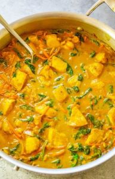

|  |
-
1.25 pounds of boneless, skinless chicken breast
-
3 tablespoons of olive oil
-
1 large onion, diced small
-
3 cloves of garlic, finely minced or pressed
-
2 to 3 teaspoons of ground turmeric
-
2 teaspoons of ground ginger or 1 teaspoon of finely chopped fresh ginger
-
2 teaspoons of ground coriander
-
2 to 4 tablespoons of yellow curry paste
-
13.5 ounces of full-fat coconut milk
-
1.5 cups of shredded carrots
-
2 to 3 cups of fresh spinach
-
1/2 teaspoon fo freshly ground black pepper
-
1 to 2 tablespoons fo lime juice
-
1/4 to 1/3 cup of fresh cilantro
-
1 to 4 tablespoons of brown sugar
-
salt to taste
|